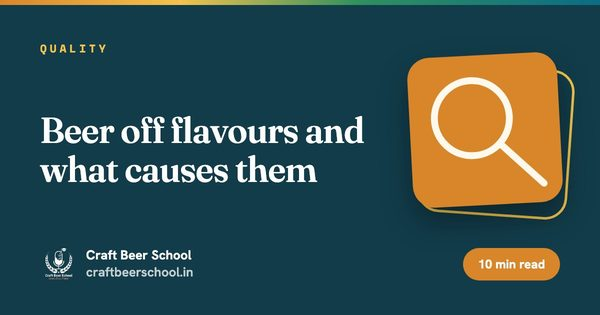

ఫార్మాట్ఆన్లైన్
వ్యవధి6 వారాలు
సెషన్లు12 లైవ్ సెషన్లు, ఒక్కొక్కటి 2 గంటలు
బ్యాచ్గరిష్ఠం 20
ఫీజు₹12,999
ఇది ఎవరి కోసం
ఇది మీ కోసమేనా?
- పనిచేస్తున్న బ్రూవర్లు, అసిస్టెంట్ బ్రూవర్లు
- Brewing Fundamentals పూర్తి చేసినవారు
- స్థిరత్వం కోసం ప్రయత్నిస్తున్న సీరియస్ హోమ్బ్రూవర్లు
కోర్సు ముగిసేసరికి
మీరు ఏం నేర్చుకుని వెళ్తారు.
- నీటి ల్యాబ్ రిపోర్ట్ను బ్రూయింగ్ వాటర్ ప్రొఫైల్గా మార్చడం
- brewhouse ఎఫిషియెన్సీని కొలవడం, మెరుగుపరచడం
- ఫెర్మెంటేషన్ ద్వారా ఎస్టర్లు, ఫ్యూజెల్స్, డయాసిటైల్ను కంట్రోల్ చేయడం
- చిన్న బ్రూవరీ కోసం QA ప్లాన్ రాయడం
మీ బోధకులు, సంప్రదించాల్సిన వ్యక్తి
ఈ కోర్సు ఎవరు బోధిస్తారు, ఎవరిని అడగాలి.


సంప్రదించాల్సిన వ్యక్తి
Chatty Girija
బీర్ పాడ్కాస్టర్ · క్రియేటివ్ స్ట్రాటజిస్ట్
Chatty కి WhatsApp చేయండిసిలబస్
వారం వారీగా.
6 వారాలు. ప్రతి వీకెండ్ రెండు లైవ్ సెషన్లు, వారానికి ఒక అసైన్మెంట్.
వారం 01. బ్రూయింగ్ వాటర్ కెమిస్ట్రీ
- కాల్షియం, మెగ్నీషియం, సల్ఫేట్, క్లోరైడ్, బైకార్బొనేట్
- రెసిడ్యువల్ ఆల్కలినిటీ, సల్ఫేట్ టు క్లోరైడ్ నిష్పత్తి
- భారత్లో బోర్వెల్, మునిసిపల్ నీటిని ట్రీట్ చేయడం, RO నీటితో కలపడం
అసైన్మెంట్: మీ స్థానిక నీటి రిపోర్ట్ను రెండు స్టైల్స్ కోసం ట్రీట్మెంట్ ప్లాన్గా మార్చండి.
వారం 02. Mash కెమిస్ట్రీ, అడ్వాన్స్డ్ మాషింగ్
- స్టెప్ mashes, ప్రోటీన్ రెస్ట్లు, డికాక్షన్
- బియ్యం, మొక్కజొన్న adjuncts, వాటిని ఉడికించడం
- Extract, lauter యీల్డ్, brewhouse ఎఫిషియెన్సీ
అసైన్మెంట్: నిజమైన బ్రూ లాగ్ నుంచి brewhouse ఎఫిషియెన్సీ లెక్కించండి.
వారం 03. Hop కెమిస్ట్రీ
- ఆల్ఫా, బీటా ఆసిడ్లు, ఐసోమెరైజేషన్, యుటిలైజేషన్
- Hop ఆయిల్స్: మిర్సీన్, లినలూల్, జెరానియోల్
- బయోట్రాన్స్ఫర్మేషన్, hop creep
అసైన్మెంట్: అదే IBU తో ఎక్కువ అరోమా వచ్చేలా hop షెడ్యూల్ను మళ్లీ డిజైన్ చేయండి.
వారం 04. Yeast, ఫెర్మెంటేషన్ మైక్రోబయాలజీ
- లాగ్, గ్రోత్, స్టేషనరీ దశలు
- ఎస్టర్లు, ఫ్యూజెల్స్ వర్సెస్ ఫెర్మెంటేషన్ ఉష్ణోగ్రత
- డయాసిటైల్, diacetyl rest, అసిటాల్డిహైడ్
- ఆక్సిజనేషన్, ప్రొపగేషన్, హార్వెస్టింగ్
అసైన్మెంట్: గ్రావిటీ, ఉష్ణోగ్రత లాగ్ల నుంచి ఒక ఫెర్మెంటేషన్ను గ్రాఫ్ వేసి, లోపాలను గుర్తించండి.
వారం 05. కంటామినేషన్, స్టెబిలిటీ, షెల్ఫ్ లైఫ్
- Lactobacillus, Pediococcus, వైల్డ్ yeast
- ఆక్సిజన్ పికప్, స్టేలింగ్
- హేజ్, ఫైనింగ్స్, ఫిల్ట్రేషన్, పాశ్చరైజేషన్ యూనిట్లు
- భారతదేశపు వేసవి సప్లై చైన్లో బీర్ను తాజాగా ఉంచడం
అసైన్మెంట్: ఒక ప్యాకేజింగ్ లైన్ను ఆక్సిజన్, ఇన్ఫెక్షన్ రిస్క్ కోసం ఆడిట్ చేయండి.
వారం 06. క్వాలిటీ అష్యూరెన్స్, కంట్రోల్
- తక్కువ బడ్జెట్లో QC ల్యాబ్: హైడ్రోమీటర్, pH మీటర్, మైక్రోస్కోప్, ఫోర్సింగ్ టెస్ట్లు
- స్పెక్స్, టాలరెన్స్లు, SOPs, బ్రూ లాగ్లు
- HACCP ప్రాథమికాలు, FSSAI
అసైన్మెంట్: 500 L బ్రూవరీ కోసం QA ప్లాన్ రాయండి.
ఇది ఎలా నడుస్తుంది
ఫార్మాట్, నిబంధనలు.
- షెడ్యూల్
- శని, ఆదివారాల్లో లైవ్, 12:00 PM నుంచి 2:00 PM IST. బ్యాచ్తో పరస్పర అంగీకారంతో సమయాలు మారవచ్చు.
- బ్యాచ్ సైజు
- గరిష్ఠంగా 20 మంది విద్యార్థులు, కాబట్టి ప్రతి ప్రశ్నకూ జవాబు దొరుకుతుంది.
- ఇందులో ఉన్నవి
- సెషన్ రికార్డింగ్లు, ప్రెజెంటేషన్ డెక్లు, వారపు అసైన్మెంట్లు, లెర్నింగ్ కిట్.
- సర్టిఫికెట్
- అన్ని అసైన్మెంట్లు సమర్పించి, కనీసం 80% లైవ్ సెషన్లకు హాజరైన తర్వాత Certificate of Completion.
- స్క్రీన్కు మించి
- సిఫారసు చేసిన మైక్రోబ్రూవరీ సందర్శనలు, మీరు చదువుతున్న కిట్ను నేరుగా చూడటానికి.
- ఫీజులు
- సైన్-అప్ సమయంలోనే పూర్తిగా చెల్లించాలి. ఏ డిస్కౌంట్లూ వర్తించవు. ఒకసారి నిర్ధారించిన కోర్సుల ప్యాకేజీని మార్చలేరు.
పూర్తి flight కావాలా? మొత్తం 27 కోర్సులు కలిపి 71 వారాలు నడుస్తాయి. ఎన్రోల్ అయ్యేటప్పుడు మీ ప్యాకేజీ ఎంచుకుంటారు. చెల్లించే ముందు మొత్తం 27 కోర్సులను పోల్చి చూడండి, రిఫండ్ పాలసీ చదవండి.
ఇంకా చదవండి
మొదలుపెట్టే ముందు చదవండి

క్రాఫ్ట్
భారతదేశపు వేడి, నీరు, రుచుల కోసం బ్రూయింగ్
మ్యూనిచ్లో పనిచేసే రెసిపీ భారతదేశంలో మే నెలలో ఆటోమేటిక్గా పనిచేయదు. మారే అంశాలు తెలుసుకోవడం విలువైనది.

నాణ్యత
బీర్ off-flavours, వాటికి కారణాలు
బటర్స్కాచ్, ఉడికించిన స్వీట్కార్న్, తడి కార్డ్బోర్డ్. ప్రతి ఒక్కటీ ముందు దశలో ఏదో తప్పు జరిగిందని చెప్పే సందేశం.

ఉద్యోగాలు
భారతదేశంలో బ్రూవర్ ఎలా కావాలి
ఇది సైన్స్ పునాది, పొద్దున్నే అలారం ఉన్న ప్రొడక్షన్ ఉద్యోగం. లోపలికి వెళ్లే నిజాయితీ దారి ఇక్కడ ఉంది.
చదవాల్సినవి
ఈ కోర్సుకు సంబంధించిన ప్రతి గైడ్.
ఈ కోర్సు కవర్ చేసే అంశాలపై 182 ఉచిత గైడ్లు. మొదటి సెషన్కు ముందు వీటిలో ఏదైనా చదవండి.
రిఫరెన్స్: బ్రూయింగ్ yeast స్ట్రెయిన్ల గైడ్ · బ్రూయింగ్ malt గైడ్ · Hop రకాల గైడ్
బ్రూయింగ్ సైన్స్ 99
- yeastను acid washing చేయడం, అది ఎప్పుడు మేలు కంటే కీడు ఎక్కువ చేస్తుంది
- Hopsను తట్టుకుని బతికే బీర్ spoilage బ్యాక్టీరియా, వాటిని ఎలా కనుగొనాలి
- Mashలో ఓట్స్, malt చేయని బార్లీతో beta glucan సమస్యలు
- Hazy IPA లో biotransformation
- సరైన boil evaporation రేటు సెట్ చేయడం
- హిల్ స్టేషన్ brewpubలో ఎత్తైన ప్రదేశంలో wort boil చేయడం
- ఫెర్మెంటేషన్ ఆగిపోకుండా 10 శాతం బీర్ బ్రూ చేయడం
- Bright beer tank లను సరిగ్గా నడపడం
- బ్రూవరీ ల్యాబ్లో pH మీటర్ను క్యాలిబ్రేట్ చేయడం, జాగ్రత్తగా చూసుకోవడం
- Centrifuge లేదా filter: పెద్ద స్థాయిలో బీర్ను స్పష్టంగా చేయడం
- మబ్బుగా ఉండే wort run-off, అది fermenterలోకి తీసుకెళ్లే లిపిడ్లు
- Haemocytometerతో yeast cellsను దశల వారీగా లెక్కించడం
- Diastaticus yeast, ప్యాక్ చేసిన బీర్ ఓవర్-కార్బొనేట్ అయ్యే ప్రమాదం
- ఉత్తమ extraction కోసం dry hop కాంటాక్ట్ టైమ్, ఉష్ణోగ్రత
- Free rise fermentation, ఉష్ణోగ్రతను ఎప్పుడు పెరగనివ్వాలి
- Glycosides, hops లోపల దాగి ఉన్న సువాసన
- బాటిల్స్, cans లో gushing, ఇన్ఫెక్షన్ కాకుండా ఇతర కారణాలు
- High gravity బ్రూయింగ్, డైల్యూషన్
- Hazy IPAలో hop burn, దాని వెనుక ఉన్న polyphenols
- Hot side aeration, చిన్న బ్రూవర్లు దాని గురించి ఆందోళన చెందాలా
- గ్లూటెన్ తగ్గించిన బీర్ తయారీకి ఎంజైమ్లను ఎలా వాడతారు
- fermenter ఎత్తు, ఆకారం yeast ప్రవర్తనను ఎలా మారుస్తాయి
- Glycogen, trehalose నిల్వ ఉంచిన yeastను ఎలా బతికిస్తాయి
- ఒక్క canning రన్ నుంచి ఎన్ని క్యాన్లు టెస్ట్ చేయాలి
- బిజీ brewpubలో yeastను ఎన్ని జనరేషన్లు repitch చేయవచ్చు
- fermenter లోకి ఎంత cold break తీసుకెళ్లాలి
- కొద్దిపాటి ఇనుము, రాగి బీర్ staling ను ఎలా వేగవంతం చేస్తాయి
- Keg లను సరిగ్గా కడగడం, నింపడం
- ఎక్కువ బియ్యం ఉన్న grists వల్ల తక్కువ FAN worts, వాటిని ఎలా సరిచేయాలి
- Low oxygen బ్రూయింగ్, mashలో wort ఆక్సిడైజ్ అవుతుందా
- Kettleలో Maillard reactions, అవి బీర్ రుచికి ఏం జోడిస్తాయి
- ట్యాంక్లో, ప్యాకేజీలో carbonation కొలవడం
- చిన్న బ్రూవరీ ల్యాబ్లో మైక్రోబయాలజీ ప్లేటింగ్
- repitch చేసిన బ్రూవరీ yeastలో petite mutants, genetic drift
- husk, hops నుంచి వచ్చే పాలీఫినాల్స్, అవి haze, astringencyని ఎలా తీర్చిదిద్దుతాయి
- ప్రెషర్ ఫెర్మెంటేషన్, అది ester స్థాయిలపై ఏం చేస్తుంది
- బీర్ ట్రాన్స్ఫర్కు ముందు ట్యాంకులు, హోస్లను CO2తో purge చేయడం
- ఫెర్మెంటేషన్ gravity కర్వ్ చదవడం
- తెల్లటి గాజు బాటిల్ బీర్కు skunky వాసన రాకుండా ఆపే reduced hop extracts
- ప్యాకేజ్డ్ బీర్లో colloidal stability కోసం silica gel లేదా PVPP
- బియ్యం, మొక్కజొన్న, బార్లీ starch gelatinisation ఉష్ణోగ్రతల పోలిక
- బీర్లో sulphites, ఇతర యాంటీఆక్సిడెంట్లు, అవి ఎప్పుడు సాయపడతాయి
- Lager ఫెర్మెంటేషన్లో సల్ఫర్
- Mash tun నుంచి fermenter వరకు calcium చేసే ఎన్నో పనులు
- Krausening వెనక సైన్స్, అది priming sugar కంటే ఎప్పుడు మెరుగు
- బ్రూ డే మాస్ బ్యాలెన్స్తో గ్రెయిన్ నుంచి గ్లాస్ వరకు extract ను ట్రాక్ చేయడం
- బీర్ రంగు, చేదు పరీక్షలకు spectrophotometer వాడటం
- భారతదేశంలో high adjunct బ్రూయింగ్లో exogenous enzymes వాడడం
- ఫెర్మెంటేషన్ సమయంలో pH తగ్గడం బ్రూవర్కు ఏమి చెబుతుంది
- Dry hop నుంచి can వరకు myrcene ఎక్కడికి వెళ్తుంది
- Fermentations ఎందుకు ఆగిపోతాయి, వాటిని సురక్షితంగా తిరిగి ఎలా మొదలుపెట్టాలి
- High gravity wortsలో hop utilisation ఎందుకు తగ్గుతుంది
- mash చిక్కదనం fermentability ని, brewhouse ఎఫిషియెన్సీని ఎందుకు మారుస్తుంది
- కొన్ని yeast strains త్వరగా flocculate అవుతాయి, మరికొన్ని ఎందుకు suspensionలోనే ఉంటాయి
- Wort చిక్కదనం, కొన్ని grists ఎందుకు అంత నెమ్మదిగా ఫిల్టర్ అవుతాయి
- Yeast autolysis, బీర్ yeast cake మీద ఎంతకాలం సురక్షితంగా ఉండగలదు
- బ్రూవరీలో CO2: కొనడం, వాడడం, తిరిగి సేకరించడం
- అంకుర్ నాపా బ్రూవర్ల కోసం తయారు చేసిన ఉచిత బ్రూయింగ్ టూల్స్
- నాణ్యత తగ్గించకుండా CIP నీరు, కెమికల్స్ తగ్గించడం
- బ్రూవర్ల కోసం కంట్రోల్ చార్ట్లు: శబ్దమా, నిజమైన సమస్యా
- ఫోర్స్డ్ ఏజింగ్ టెస్ట్లు: మూడో నెల రుచిని మొదటి వారంలోనే చూడటం
- Monotanking: ఒకే ట్యాంక్ నుంచి ఫెర్మెంటింగ్, కండిషనింగ్, సర్వింగ్
- రూట్ కాజ్ అనాలిసిస్: అదే బ్రూవరీ సమస్యను రెండుసార్లు పరిష్కరించడం ఆపండి
- Spunding: మీ సొంత ఫెర్మెంటేషన్ CO2 తో కార్బొనేట్ చేయడం
- స్టాండర్డ్ వర్క్: బ్రూ డే నుంచి ఒక గంట తగ్గించడం
- Thiolized yeast, బయోట్రాన్స్ఫర్మేషన్, వివరంగా
- మీ ఫ్లాగ్షిప్ బీర్ను రిస్క్ చేయకుండా కొత్త hop ను ట్రయల్ చేయడం
- Yeast పోషణ: ఎక్కువ పని జింక్, FAN చేస్తాయి
- Yeast వయబిలిటీ, వైటాలిటీ: కణాలను సరిగ్గా లెక్కించడం
- గ్లైకాల్ కూలింగ్ సిస్టమ్లు
- భారతదేశపు వేడిలో బీర్ను స్థిరంగా ఉంచడం
- కరిగిన ఆక్సిజన్ను కొలవడం
- తక్కువ బడ్జెట్లో బ్రూవరీ QC ల్యాబ్
- చిన్న బ్రూవరీల కోసం క్లీనింగ్ ఇన్ ప్లేస్
- బ్రూయింగ్లో బ్యాక్టీరియా, ఇన్ఫెక్షన్
- పాతబడిన బీర్ కెమిస్ట్రీ
- బీర్ షెల్ఫ్ లైఫ్
- ప్యాకేజింగ్లో ఆక్సిజన్ పికప్
- Hop creep, దాన్ని ఎలా నియంత్రించాలి
- బీర్లో హేజ్కు కారణాలు
- బీర్ ఫోమ్ వెనుక సైన్స్
- పాశ్చరైజేషన్ యూనిట్లు, వివరంగా
- బీర్ ఫిల్ట్రేషన్ ప్రాథమికాలు
- ఫైనింగ్స్తో బీర్ను స్పష్టంగా చేయడం
- కోల్డ్ క్రాషింగ్
- Lagering, వివరంగా
- Diacetyl rest
- ఎస్టర్లు, ఫ్యూజెల్ ఆల్కహాల్స్
- Yeast పెరుగుదల దశలు
- Wort ఏరేషన్, yeast కోసం ఆక్సిజన్
- Whirlpool hopping
- Boil కెమిస్ట్రీ, హాట్ బ్రేక్
- Brewhouse ఎఫిషియెన్సీ, నిజాయితీగా కొలిచింది
- స్టక్ mash ను ఎలా నివారించాలి, ఎలా సరిచేయాలి
- Lautering, sparging
- డికాక్షన్ మాషింగ్
- స్టెప్ మాషింగ్, అది ఎప్పుడు విలువైనది
- మీ mash లో పనిచేసే ఎంజైమ్లు
- Mash pH, వివరంగా
పదార్థాలు 75
- క్లీన్, డ్రై IPA కోసం American ale yeast స్ట్రెయిన్ల పోలిక
- బెల్జియన్ yeast strains, ఉష్ణోగ్రత వాటి ఫ్లేవర్ను ఎలా మారుస్తుంది
- Lagersలో శుభ్రమైన, మృదువైన చేదు కోసం bittering hop ఎంచుకోవడం
- bitter pale ale కోసం Burton వాటర్ ప్రొఫైల్ తయారుచేయడం
- భారతదేశంలో బ్రూవర్గా స్పెషాలిటీ మాల్ట్ను తక్కువ పరిమాణంలో కొనడం
- బీర్లో మిరపకాయ: సరైన మిరప ఎంచుకోవడం, కారాన్ని నియంత్రించడం
- bitters, stouts కోసం ఇంగ్లిష్ ale yeast strains పోలిక
- సబ్బు రుచి రాకుండా బీర్లో గులాబీ, మందార, ఇతర పూలు
- మీ hops ఎంత బీర్ను పీల్చుకుంటాయి, అందులో కొంత ఎలా తిరిగి పొందాలి
- Hop oils: గ్లాసులో myrcene, linalool, geraniol
- బీర్లో భారతీయ పులుపు పదార్థాలుగా కోకం, చింతపండు
- sour బీర్ కోసం Lachancea, ఇతర సంప్రదాయేతర yeasts
- mash, sparge pH సర్దుబాటుకు lactic లేదా phosphoric acid
- త్వరిత kettle sours కోసం Lactobacillus culture ఎంచుకోవడం
- Lager yeast strain ల పోలిక
- malt సర్టిఫికెట్ ఆఫ్ అనాలిసిస్ చదవడం
- ఇన్ఫెక్షన్, బురద haze లేకుండా బీర్లో మామిడి గుజ్జు వాడడం
- భారతదేశంలో Weyermann malt కొనడం: OM Brewtech గైడ్
- Weyermann Abbey malt: బెల్జియన్ ales కోసం బిస్కెట్, తేనె
- Weyermann Acidulated malt: సహజంగా mash pH తగ్గించడం
- Weyermann Barke Munich malt: పాత తరం బార్లీ నుంచి లోతైన malt రుచి
- Weyermann Barke Pilsner malt: ఆధునిక lager లో పాత తరం బార్లీ
- Weyermann Barke Vienna malt: పాత తరం బార్లీ, Vienna lager కోసం కిల్న్ చేసింది
- Weyermann Beech Smoked Barley malt: బాంబర్గ్ Rauchbier malt
- Weyermann Bohemian Pilsner malt: గ్రిస్ట్లో చెక్ స్వభావం
- Weyermann Brewing Malt Type Cologne: Kolsch కోసం తయారైన బేస్ malt
- Weyermann CARAAMBER: బ్రెడ్ లాంటి ముగింపుతో అంబర్ రంగు
- Weyermann CARAAROMA: పెద్ద malt అరోమా కోసం అత్యంత ముదురు కారమెల్
- Weyermann CARABELGE: బెల్జియన్ ales కోసం కారమెల్
- Weyermann CARABOHEMIAN: చెక్ అంబర్ lagers వెనుక ఉన్న కారమెల్ malt
- Weyermann CARAFA Type 1, 2 and 3: డార్క్ బీర్ల కోసం రోస్ట్ చేసిన malt
- Weyermann CARAFA SPECIAL: తక్కువ రోస్ట్ ఘాటుతో ముదురు రంగు
- Weyermann CARAFOAM: లేత బీర్ల కోసం ఫోమ్, బాడీ ఇచ్చే malt
- Weyermann CARAHELL: లేత బీర్ల కోసం లైట్ కారమెల్
- Weyermann CARAMUNICH Type 1, 2 and 3: అంబర్ కారమెల్, మూడు స్థాయిలు
- Weyermann CARAPILS: రంగు లేకుండా బాడీ, ఫోమ్
- Weyermann CARARED: రోస్ట్ లేకుండా ఎరుపు రంగు
- Weyermann CARARYE: రై నుంచి కారమెల్ malt
- Weyermann CARAWHEAT: గోధుమ నుంచి కారమెల్ malt
- Weyermann Chocolate Rye malt: కారపు అంచుతో రోస్ట్
- Weyermann Chocolate Wheat malt: dunkels, porters కోసం ముదురు గోధుమ
- Weyermann Dark Wheat malt: Dunkelweizen, Weizenbock కోసం
- Weyermann Diastatic Barley malt: అడ్జంక్ట్ ఎక్కువగా ఉండే mashes కోసం అదనపు ఎంజైమ్లు
- Weyermann Eraclea Pilsner malt: లేత బీర్ల కోసం ఇటాలియన్ బార్లీ
- Weyermann Extra Pale Premium Pilsner malt: అత్యంత లేత బీర్ల కోసం
- Weyermann Floor-Malted Bohemian Dark malt: చెక్ డార్క్ lagers కోసం
- Weyermann Floor-Malted Bohemian Pilsner malt: మాల్టింగ్ పాత పద్ధతి
- Weyermann Isaria 1924 malt: 100 ఏళ్ల బార్లీతో బ్రూయింగ్
- Weyermann malts: శ్రేణిలోని ప్రతి malt కు బ్రూవర్ గైడ్
- Weyermann Melanoidin malt: డికాక్షన్ లేకుండానే డికాక్షన్ లాంటి లోతు
- Weyermann Munich malt Type 1 and Type 2: సరైనది ఎంచుకోవడం
- Weyermann Oak Smoked Wheat malt: Grodziskie వంటి బీర్ల కోసం మృదువైన పొగ
- Weyermann Pale Ale malt: ales కోసం నిండైన బేస్
- Weyermann Pale Rye malt: కారం, బాడీ, ఒక lautering సవాల్
- Weyermann Pale Wheat malt: Hefeweizen కు గుండె
- Weyermann Pilsner malt: శుభ్రమైన, లేత lagers కు బేస్
- Weyermann Roasted Barley: stout లోని డ్రై రోస్ట్
- Weyermann SINAMAR, malt extracts: డబ్బా నుంచి రంగు, wort
- Weyermann Sour Wort: డబ్బాలో బయోలాజికల్ ఆసిడిఫికేషన్
- Weyermann Special W: ఎండు పండ్ల అంచుతో ముదురు కారమెల్
- Weyermann Spelt malt: ప్రాచీన గోధుమతో బ్రూయింగ్
- Weyermann Vienna malt: బంగారు రంగు, టోస్టీ వెన్నెముక
- రీజెనరేటివ్ బార్లీ, సస్టైనబుల్ malt: బ్రూవర్ ఏం అడగవచ్చు
- వేడి వాతావరణం కోసం Kveik yeast
- Yeast ను హార్వెస్ట్ చేసి మళ్లీ వాడటం
- Yeast స్టార్టర్ తయారు చేయడం
- RO నీటితో బ్రూయింగ్
- బ్రూయింగ్ కోసం బోర్వెల్ నీటిని ట్రీట్ చేయడం
- సల్ఫేట్ టు క్లోరైడ్ నిష్పత్తి
- నీటి కాఠిన్యం, బీర్
- Hop extracts, cryo hops
- Dry hopping: టైమింగ్, మోతాదు, కాంటాక్ట్
- Hop నిల్వ, తాజాదనం
- ఆల్ఫా ఆసిడ్లు, hop చేదు
- భారతీయ బ్రూయింగ్లో బియ్యం, మొక్కజొన్న అడ్జంక్ట్లు
కెరీర్లు 4
Advanced Brewing Science లో మీ సీటు రిజర్వ్ చేసుకోండి.
ప్రతి బ్యాచ్లో గరిష్ఠంగా 20 మంది. ఇప్పుడే ఎన్రోల్ అవ్వండి లేదా WhatsApp లో మమ్మల్ని అడగండి.